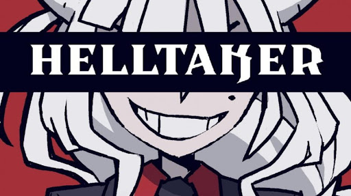

Blog Articles
Hollow Knight

Do you like to play metrovania genre? If your answer is Yes, then play Hollow Knight.
Hollow Knight is 2D platformer metrovania game. Main character traveling Underworld kingdom and figure
out what happened on this kingdom. The reason why I want to recommend this game is because there are
many different excellences in this game. The first one that I want to talk about is its graphic. The
developers used interesting skill to present the game’s graphic. They used several layers and coded that
layers are combined and broken depending on the character’s movement. It looks like a background when
your character is far away, but if you go to that layer, it becomes a ground of the map. This can catch
my mind.
Next, the music is amazing. Fantastical and mysterious music is mixed up with the great background
graphic and particles, it makes great and wonderful mood to play the game. The users can focus on the
playing and can feel they are being the main character in the game.
What is the next? Of course, it is the battle style. Did you ever play Dark Soul? If you played Dark
Soul, you might remember your hard experiences to beat the bosses with crazy patterns. Hollow Knight was
a 2D version of that! You can fight with the boss with crazy patterns and test your control skills.
If You never played Hollow Knight, It’s the time to spend your time with Hollow Knight!
Oct.08 2020, -Yunhyeong Kim
Helltaker

Make A harem of Demon girls.One night, you fall into sleep, and you saw some pretty demon girls, then you
decided to get those demon girls. Now, it is the time to travel hell to get demon girls as Hell Taker!
Hell Taker is a puzzle game to figure out finding the path to go to the demon girls and talk with them
for getting them to your harem. Just like what I said, the game play is pretty simple. Yes, there should
be many games like this, but what part make this game is special?
It was its art style and a naked explanation. The character’s idle animation is cute and useful to use on
the other game characters and its illustration is pretty. This was the first part that could catch
users’ minds. Since the main character wants to put all demon girls into his harem, they don’t care
about talking about the sexual talk. In game, this kind of thing is unusual thing. That’s why many
people play Helltaker and also me.
Its playtime is short. If you are used to play puzzle game, it would be easy to solve the puzzles that
provided. If you don’t have a game to play right now, try Helltaker. You can download it from Steam and
it’s free!
Character profiles
| Name |
Title |
Sentence |
| Modeus |
The Lustful Demon |
"You and me. Now" |
| Malina |
The Sour Demon |
"Like what... video games? Sure, why not." |
| Lucifer |
The CEO of Hell |
"You're lucky that I have a thing for pancakes." |
Oct.08 2020, -Yunhyeong Kim